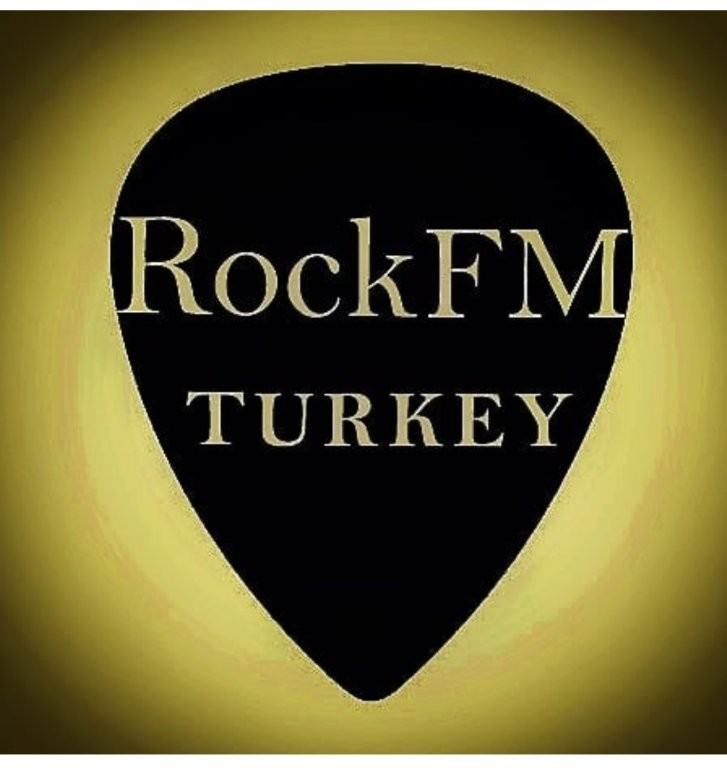

Hazırlayan: Hakan
Tarih: 14 Mayıs 2026
Kim için: Abdullah Abi
RockFMTurkey markası için iOS, Google Play Store ve Huawei AppGallery mağazalarında yayınlanacak bir mobil radyo uygulaması hazırlanacaktır. Uygulama üzerinden kullanıcılar tek butonla canlı yayını dinleyebilecek, o an çalmakta olan şarkının sanatçı ve isim bilgisini gerçek zamanlı olarak görebileceklerdir.
Müzikler, sadece yönetici (admin) tarafından mobil uygulama üzerinden sisteme yüklenecektir. Yüklenen şarkılar sırayla otomatik olarak yayınlanır (24/7 kesintisiz yayın). Kullanıcılar şarkı seçemez, sadece dinler. Bu yapı klasik bir radyo deneyimi sunar.
Asıl iş hedefi: uygulamanın kaç kişi tarafından indirildiğini ve aktif kullanıldığını ölçmektir. Bunun için her üç mağaza ve uygulama içi analitik panel kurulacaktır.
Ayrıca rockfmturkey.com adresi için sade bir tanıtım web sayfası hazırlanacak; ziyaretçiler buradan üç mağazadaki uygulama linklerine ulaşabilecek.
Yukarıdaki özellikler, MVP yayına çıktıktan sonra ihtiyaç doğdukça ek faz olarak planlanabilir ve fiyatlandırılabilir.
| Faz | İçerik | Süre |
|---|---|---|
| 1 | Ön tasarım — mobil ekran taslakları ve müşteri onayı | 1 hafta |
| 2 | Yayın altyapısı ve web sayfası kurulumu | 1 hafta |
| 3 | Kullanıcı uygulamasının geliştirilmesi | 2 hafta |
| 4 | Yönetici yükleme ekranının geliştirilmesi | 1 hafta |
| 5 | Test ve mağaza hazırlıkları | 1 hafta |
| 6 | Mağaza yayın onay süreçleri (Apple, Google, Huawei) | 1–2 hafta |
| Toplam tahmini süre | 7–9 hafta | |
| Kalem | Tutar | Açıklama |
|---|---|---|
| Uygulama geliştirme | 50.000 TL | 3 mağaza için tek kod tabanı + yönetici paneli + web sayfası |
| Apple Developer üyeliği | Hakan tarafından karşılanacak (mevcut lisans kullanılacak) | |
| Google Play geliştirici | Hakan tarafından karşılanacak (mevcut lisans kullanılacak) | |
| Huawei Developer | Ücretsiz | Sadece kimlik doğrulama (Abdullah Abi'nin açması gerekir) |
| SSL sertifikası (web) | Ücretsiz | Let's Encrypt |
| Logo / ikon | 0 TL | RockFMTurkey.jpg zaten elimizde |
| Sana düşen başlangıç gideri | 50.000 TL |
100 eşzamanlı dinleyiciye kadar bu konfigürasyon yeterlidir.
| Kalem | Aylık | Açıklama |
|---|---|---|
| Yayın sunucusu (VPS) | ~170 TL | Hetzner CX22 (~5 € / ay) |
| Bant genişliği | 0 TL | VPS paketine dahil |
| Alan adı (rockfmturkey.com) | ~50 TL | Yıllık ücret aylığa bölünmüş |
| Analitik (Google Analytics) | 0 TL | Ücretsiz katman yeterli |
| Aylık toplam | ~220 TL |
| Eşzamanlı dinleyici | Önerilen sunucu | Aylık sunucu |
|---|---|---|
| 0 – 100 kişi | Hetzner CX22 (2 vCPU, 4 GB) | ~170 TL |
| 100 – 500 kişi | Hetzner CX32 (4 vCPU, 8 GB) | ~340 TL |
| 500 – 2.000 kişi | Hetzner CPX41 (8 vCPU, 16 GB) | ~850 TL |
| 2.000+ kişi | İçerik dağıtım ağı (CDN) gerekli | 1.500 TL+ |
Uygulama büyüdükçe sunucu büyütülür — yeniden yazım gerekmez. Bu kademe geçişleri 1 günde tamamlanır.
Başlayabilmem için sadece şunlar lazım:
Telif: Türkiye'de internet üzerinden müzik yayını için MESAM, MSG ve MÜYABİR'e telif ödemesi yapılması gerekiyor. Yasal sorumluluk sende — bunu netleştirmemiz iyi olur.
Mağaza onay süresi: Apple 1–3 gün, Google 1–2 gün, Huawei 2–5 gün içinde onay veriyor. Reddedilirse düzeltme süresi yol haritasına dahil.
Önce ekran taslağı: Kod yazmaya başlamadan tarayıcıda açılabilen bir ekran taslağı (mockup) göndereceğim. Sen onaylamadan asıl geliştirmeye başlamam.
Aramızda olduğu için kağıt iş yapmaya gerek yok. Ödeme şeklini ikimiz konuşuruz.